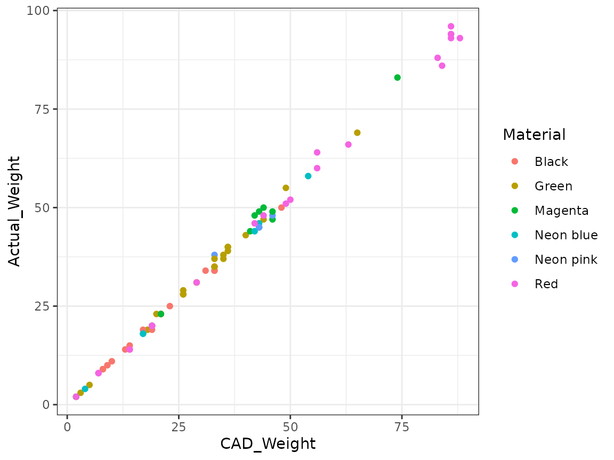
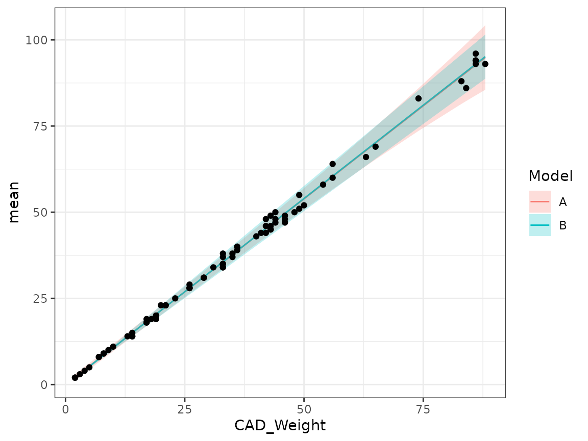

vignettes/Tutorial06Solutions.Rmd
Tutorial06Solutions.RmdIn this lab session you will explore
StatCompLab package (see the Lab03 vignette for more details).R file or a new .Rmd file.The aim is to build and assess statistical models of material use in a 3D printer.1 The printer uses rolls of filament that gets heated and squeezed through a moving nozzle, gradually building objects. The objects are first designed in a CAD program (Computer Aided Design), that also estimates how much material will be required to print the object.
The data can be loaded with data("filament1", package = "StatCompLab"), and contains information about one 3D-printed object per row. The columns are
Index: an observation indexDate: printing datesMaterial: the printing material, identified by its colourCAD_Weight: the object weight (in gram) that the CAD software calculatedActual_Weight: the actual weight of the object (in gram) after printingIf the CAD system and printer were both perfect, the CAD_Weight and Actual_Weight values would be equal for each object. In reality, there is both random variation, for example due to varying humidity and temperature, and systematic deviations due to the CAD system not having perfect information about the properties of the printing materials.
When looking at the data (see below) it’s clear that the variability of the data is larger for larger values of CAD_Weight. The printer operator wants to know which of two models, named A and B, are better at capturing the distributions of the random deviations.
Both models use a linear model for coneection between CAD_Weight and Actual_Weight. We denote the CAD weight for observations \(i\) by x_i, and the corresponding actual weight by \(y_i\). The two models are defined by
The printer operator reasons that due to random fluctuations in the material properties (such as the density) and room temperature should lead to a relative error instead of an additive error, and this leads them to model B as an approximation of that. The basic physics assumption is that the error in the CAD software calculation of the weight is proportional to the weight itself. Model A on the other hand is slightly more mathematically convenient, but has no such motivation in physics.
Start by loading the data and plot it.
Solution:
data("filament1", package = "StatCompLab")
suppressPackageStartupMessages(library(tidyverse))
ggplot(filament1, aes(CAD_Weight, Actual_Weight, colour = Material)) +
geom_point()
Next week, we will assess model predictions using cross validation, where data is split into separate parts for parameter estimation and prediction assessment, in order to avoid or reduce bias in the prediction assessments. For simplicity this week, we will start by using the entire data set for both parameter estimation and prediction assessment.
First, use filament1_estimate from the StatCompLab package to estimate the two models A and B using the filament1 data. See the help text for information.
Solution:
fit_A <- filament1_estimate(filament1, "A")
fit_B <- filament1_estimate(filament1, "B")Next, use filament1_predict() to compute probabilistic predictions of Actual_Weight using the two estimated models.
Solution:
pred_A <- filament1_predict(fit_A, newdata = filament1)
pred_B <- filament1_predict(fit_B, newdata = filament1)Inspect the predictions by drawing figures, e.g. with geom_ribbon(aes(CAD_Weight, ymin = lwr, ymax = upr), alpha = 0.25) (the alpha here is for transparency), together with the observed data. It can be useful to join the predictions and data into new data.frame objects to get access to both the prediction information and data when plotting.
Solution:
ggplot(mapping = aes(CAD_Weight)) +
geom_line(aes(y = mean, col = "A"), data = cbind(pred_A, filament1)) +
geom_line(aes(y = mean, col = "B"), data = cbind(pred_B, filament1)) +
geom_ribbon(aes(ymin = lwr, ymax = upr, fill = "A"),
data = cbind(pred_A, filament1),
alpha = 0.25) +
geom_ribbon(aes(ymin = lwr, ymax = upr, fill = "B"),
data = cbind(pred_B, filament1),
alpha = 0.25) +
geom_point(aes(y = Actual_Weight), data = filament1)
A more compact alternative is to first collect all the data into a common data object, using the techniques introduced in the later sections of this lab:
ggplot(rbind(cbind(pred_A, filament1, model = "A"),
cbind(pred_B, filament1, model = "B")),
mapping = aes(CAD_Weight)) +
geom_line(aes(y = mean, col = model)) +
geom_ribbon(aes(ymin = lwr, ymax = upr, fill = model), alpha = 0.25) +
geom_point(aes(y = Actual_Weight), data = filament1)Here, the geom_point call gets its own data input to ensure each data point is only plotted once.
Now, use the score calculator function proper_score from the StatCompLab package to compute the squared error, Dawid-Sebastiani, and Interval scores (with target coverage probability 90%). It’s useful to joint the prediction information and data set with cbind, so that e.g. mutate() can have access to all the needed information.
Solution:
score_A <- cbind(pred_A, filament1) %>%
mutate(
se = proper_score("se", Actual_Weight, mean = mean),
ds = proper_score("ds", Actual_Weight, mean = mean, sd = sd),
interval = proper_score("interval", Actual_Weight,
lwr = lwr, upr = upr, alpha = 0.1)
)
score_B <- cbind(pred_B, filament1) %>%
mutate(
se = proper_score("se", Actual_Weight, mean = mean),
ds = proper_score("ds", Actual_Weight, mean = mean, sd = sd),
interval = proper_score("interval", Actual_Weight,
lwr = lwr, upr = upr, alpha = 0.1)
)See the next section for a more compact alternative.
As a basic summary of the results, compute the average score \(\overline{S}(\{F_i,y_i\})\) for each model and type of score, and present the result with knitr::kable().
Solution:
score_AB <-
rbind(cbind(score_A, model = "A"),
cbind(score_B, model = "B")) %>%
group_by(model) %>%
summarise(se = mean(se),
ds = mean(ds),
interval = mean(interval))
knitr::kable(score_AB)| model | se | ds | interval |
|---|---|---|---|
| A | 1.783616 | 1.0428110 | 5.471989 |
| B | 1.790706 | 0.8874053 | 5.108026 |
Do the scores indicate that one of the models is better or worse than the other? Do the three score types agree with each other?
Solution:
The squared error score doesn’t really care about the difference between the two models, since it doesn’t directly involve the variance model (the paramter estimates for the mean are different, but not by much). The other two scores indicate that model B is better than model A.
Now, use the sample() function to generate a random selection of the rows of the data set, and split it into two parts, with ca 50% to be used for parameter estimation, and 50% to be used for prediction assessment.
Solution:
idx_est <- sample(filament1$Index,
size = round(nrow(filament1) * 0.5),
replace = FALSE)
filament1_est <- filament1 %>% filter(Index %in% idx_est)
filament1_pred <- filament1 %>% filter(!(Index %in% idx_est))Redo the previous analysis for the problem using this division of the data.
Solution:
fit_A <- filament1_estimate(filament1_est, "A")
fit_B <- filament1_estimate(filament1_est, "B")
pred_A <- filament1_predict(fit_A, newdata = filament1_pred)
pred_B <- filament1_predict(fit_B, newdata = filament1_pred)
scores <-
rbind(cbind(pred_A, filament1_pred, model = "A"),
cbind(pred_B, filament1_pred, model = "B")) %>%
mutate(
se = proper_score("se", Actual_Weight, mean = mean),
ds = proper_score("ds", Actual_Weight, mean = mean, sd = sd),
interval = proper_score("interval", Actual_Weight,
lwr = lwr, upr = upr, alpha = 0.1)
)
score_summary <- scores %>%
group_by(model) %>%
summarise(se = mean(se),
ds = mean(ds),
interval = mean(interval))
knitr::kable(score_summary)| model | se | ds | interval |
|---|---|---|---|
| A | 2.347716 | 1.526730 | 5.644020 |
| B | 2.561198 | 1.215711 | 4.878368 |
Do the score results agree with the previous results?
Solution:
The results will have some more random variability due to the smaller size of the estimation and prediction sets, but will likely agree with the previous results.
Special thanks to Sten Lindgren for providing the printer data.↩︎